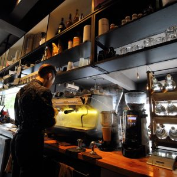
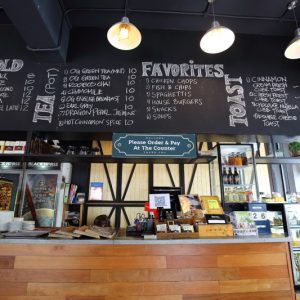
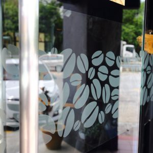
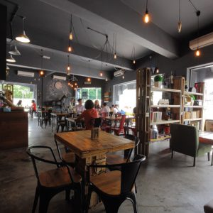
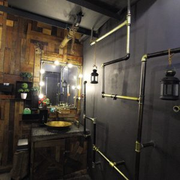

Tea Why Cafe ...
We are a group of people thriving to make your experience at the Tea Why Cafe an exquisite one. Throughout the 4 years, we've been trying our best to make changes with the help of your feedbacks so feel free to add one in the help page.
We started our journey in 2018 and is currently celebrating our 4th anniversary! So be sure to take part in all kinds of discount events that are currently available! Our cafe at first was just a mediocre cafe due to our lack of ideas to improve. However, things has changed once we started listening to our customers. We realized now that customers are always right and we should put their suggestions in consideration if we are able to do so... And look at where we are today! The Tea Why Cafe today wasn't going to exist without all of our customer's help and we sincerely thank you for that.
We at the Tea Why Cafe look forward to how our next journey will unfold, and we hope that you will always help us on our journeys for years to go.
Concept
TEA WHY CAFE conceptualises indoor and al fresco food experience in a family casual dining setting.
Occassional live latte art and musical performances are set to bring the right mood to your dining experience in the cosy epicentre of our elegant café.




